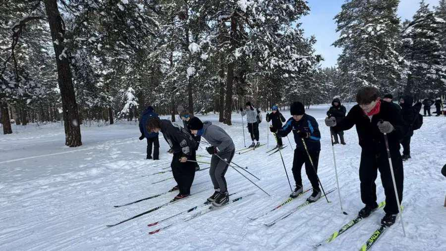
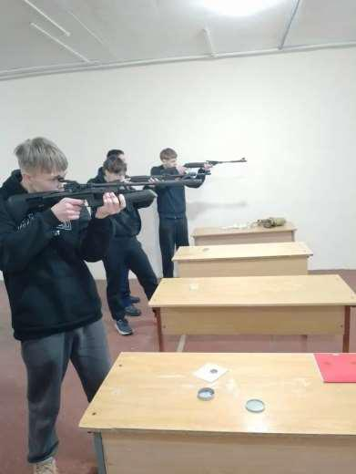

ЗАЩИТНИК ОТЕЧЕСТВА
23 января 2026 года на базе ГУО «Средняя школа № 20 г. Борисова» прошли соревнования среди юношей допризывного и призывного возраста учреждений общего среднего образования по зимнему многоборью «Защитник Отечества» Государственного физкультурно-оздоровительного комплекса Республики Беларусь.
Вопреки погодным условиям, все участники соревнований продемонстрировали боевой дух, выдержку, стремление к победе!
Команда гимназии в составе: Яковлев Марк, Ключник Павел, Дзекунов Андрей заняла второе итоговое место.

